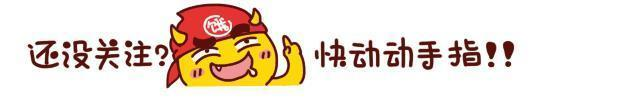
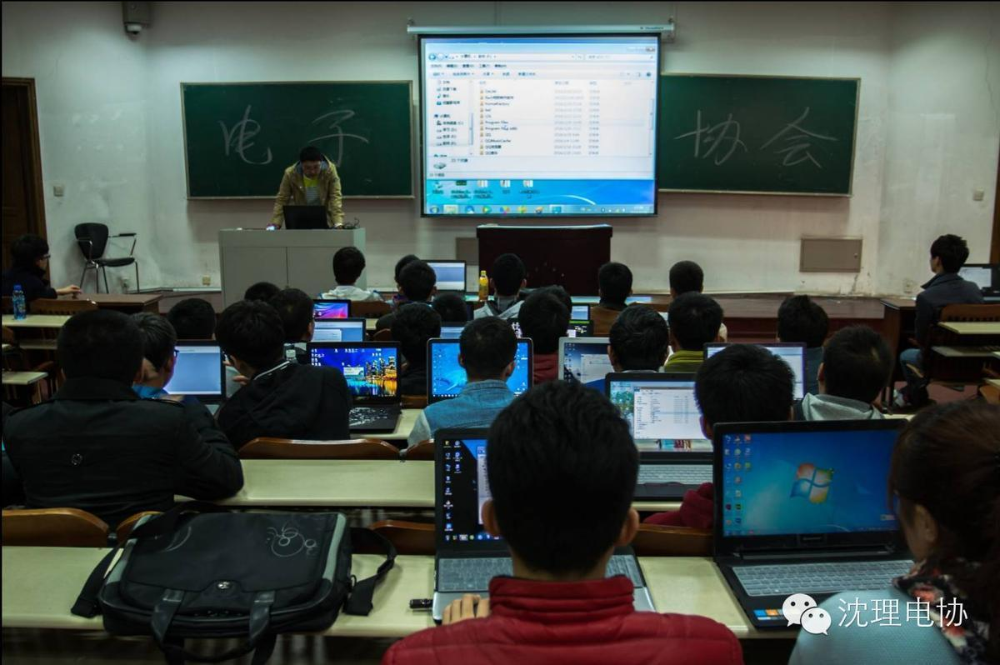
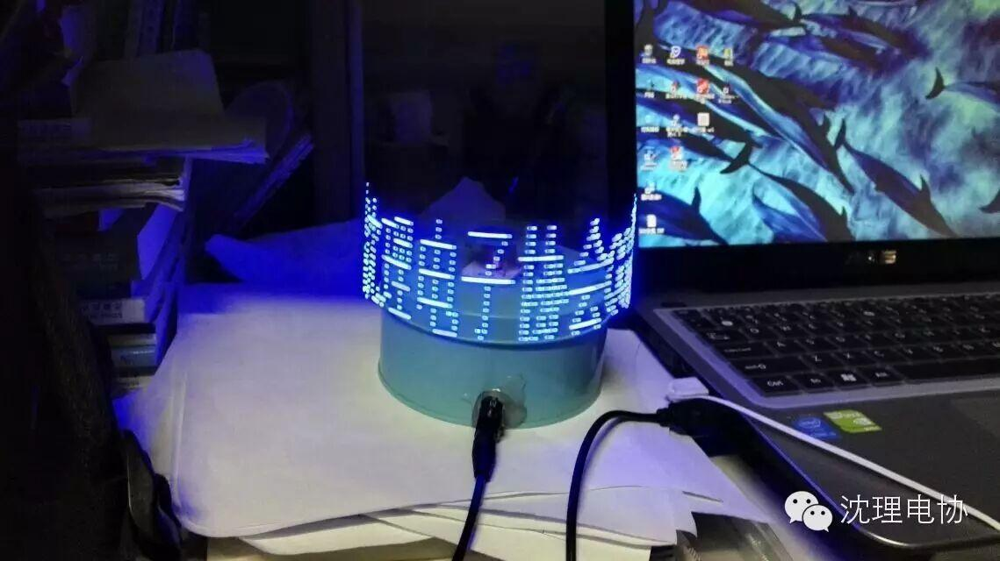
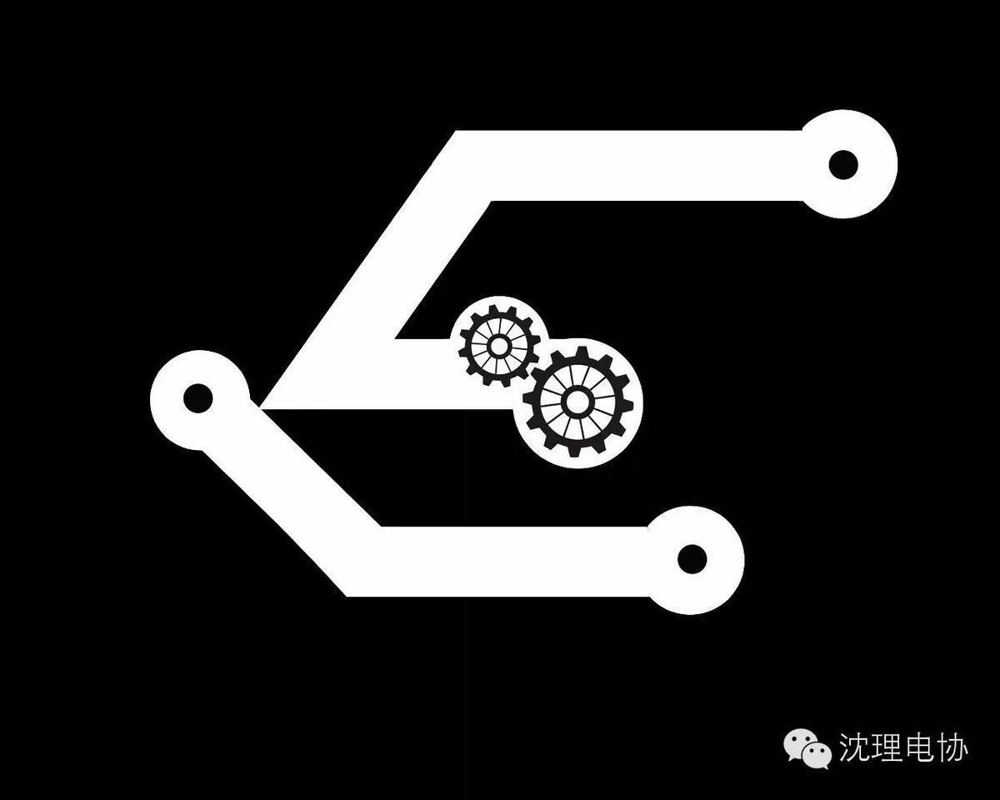

电协见面会


亲爱的电协会员、学弟学妹们：
经过漫长的等待，招新后电协的第一次活动终于来了。
本周六晚6:00信息楼226/228/229期待着你的到来（具体组内通知），会场会有关于电协以及培训、比赛的一些具体介绍，同时请学弟学妹们准备好自我介绍。
这一次活动我们主要目的在于相互认识，熟悉电子协会。帮助大家融入到这个大家庭中！
>>>>注：大家不需要拿任何东西。有其他问题可随时问组长。
天气转凉，注意增加衣物。

微信平台建议收集
随着前期比赛与招新工作的结束，我们的沈理电协公众微信号正式回归。将会继续之前的两天一更，一周三更（除星期日）。为了更好服务电协社团成员，你可以把对微信平台的建议写在留言板中或者发送至邮箱sldzxh@sina.com。如果你有好的内容想要分享（发送链接或文件）或者其他建议都可发送到sldzxh@sina.com。
任何建议都是对平台的进步。
电协微信平台与你共成长！
编/高天
· 点个赞呗 ·